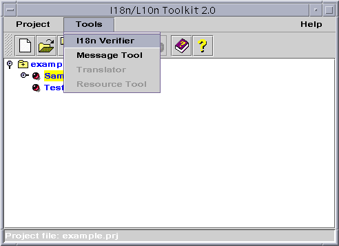
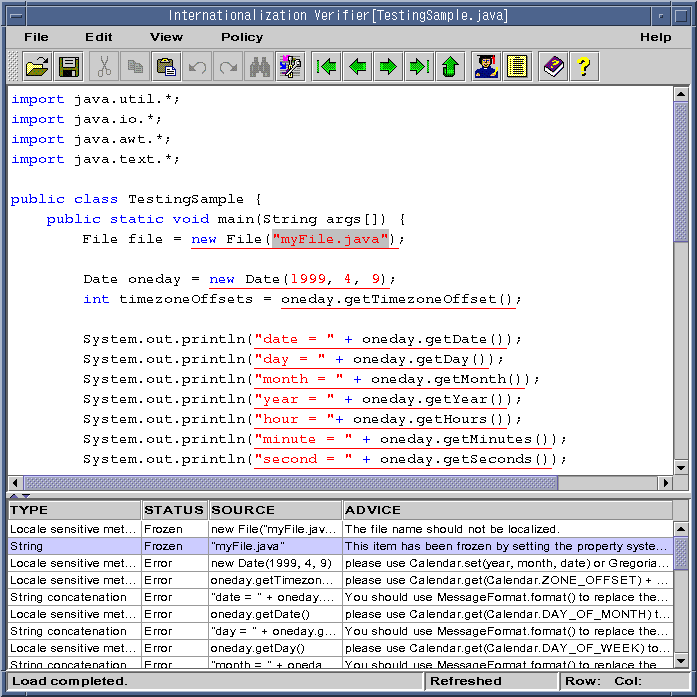
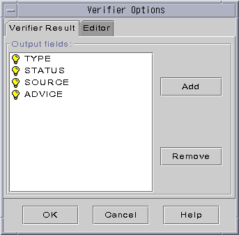
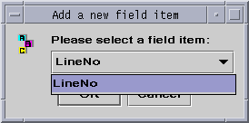
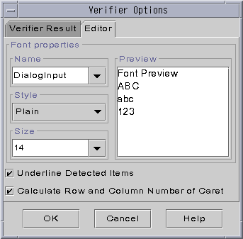
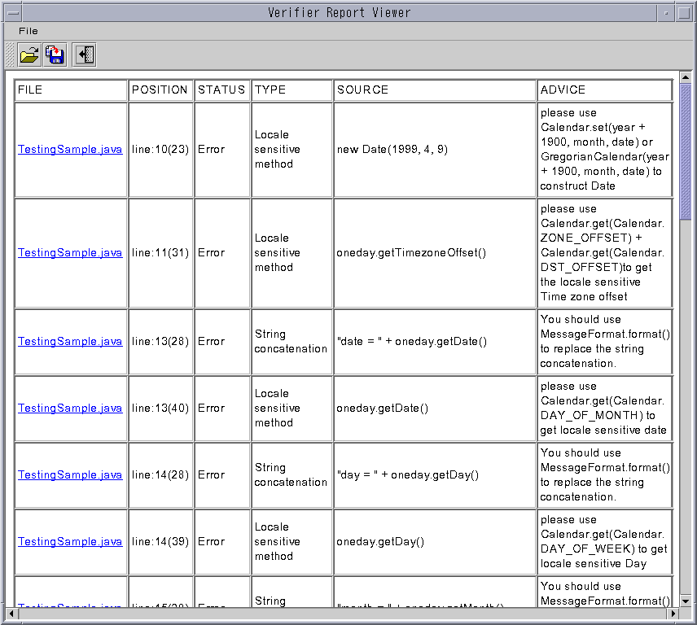
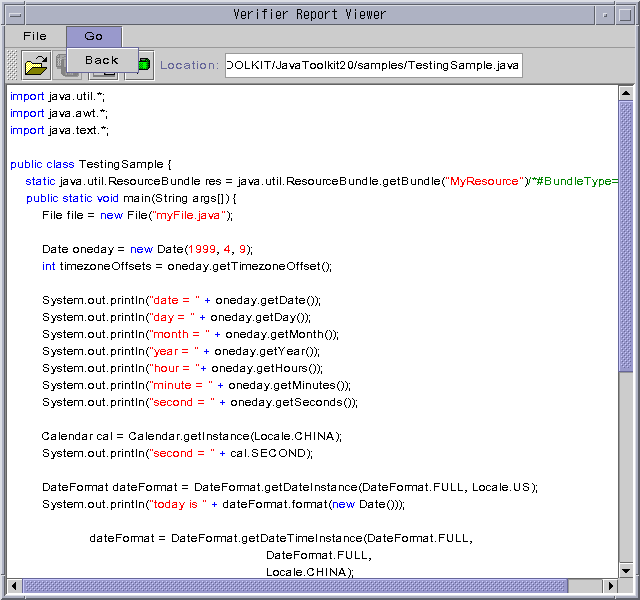
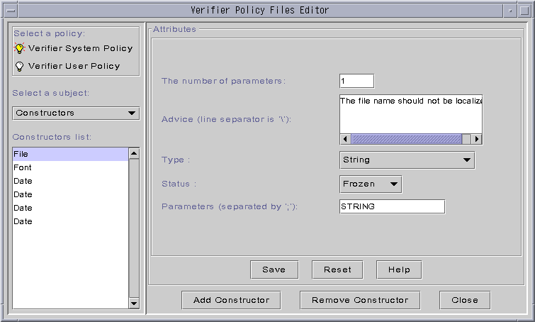
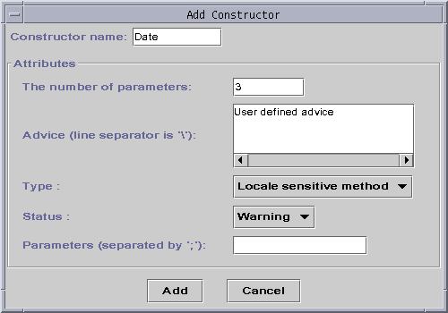
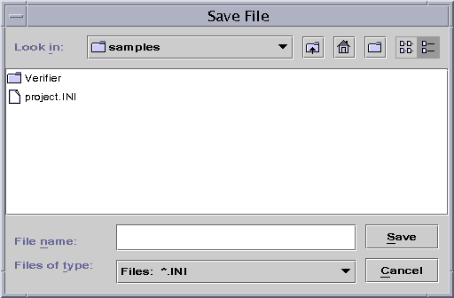

Internationalization Verifier

[contents]
Introducing the I18n Verifier
Using the I18n Verifier
Verifier Command-line
Setting Verifier Properties
This chapter will introduce how to use I18n Verifier to verify
the internationalization of Java application development.
Introducing the I18n
Verifier
I18n Verifier helps you to determine whether your program is globally
designed.
The I18n Verifier highlights parts of the original source code that
are locale specific or possibly locale-specific and suggestions solutions.
The tool checks:
-
strings
-
methods
-
classes
-
class constants
You can correct your programs while using the tool or wait until a later
time.
I18n Verifier includes a default system policy to use with the source
code; you can customize your own policy by using the "edit policy" menu
function provided.
Using the I18n Verifier
Getting Started
with I18n Verifier
You can start I18n Verifier by two means:
-
In command line, type: "verifier <parameters>". Then the I18n Verifier
is started in the command line mode. If you only type "verifier" without
any parameters, the I18n Verifier is started in GUI mode.
-
Under the GUI mode, in the Toolkit window of I18n/L10n Toolkit 2.0(figure1),
you can start I18n Verifier by selecting the menu item of it, the
function button or the corresponding popup menu item. Then you can get
I18n Verifier window pop-up (figure2).

Figure1: Select verifier tool

Figure2: I18n Verifier
The file in the above window of figure2 is an editor. The Java source file
is displayed in it. The lower one is Verifier output window.
The text in the source code marked with underline means it might not
be internationalized. It is called "verifier item". The
information table about all verifier items is listed in the Verifier output
window. Double click the verifier item in the editor window, its related
information line will be highlighted in the table of the output window.
Select a row in the table of output window, the corresponding verifier
item will be highlighted in the editor window.
There are some columns in the table of the output window. They are:
-
Line No: indicates the position of the verifier item.
-
TYPE: describes the type of the verifier item, There are several
types:
-
String
-
Bundle name
-
Resource bundle
-
Retrieved method
-
Locale sensitive method
-
STATUS: describes the status of the verifier item. There are several
different status:
-
Error: The item which should be internationalized. If the type of the item
is "String", it can be converted by the auto convert tool (Message Tool).
If the type of the item is "Locale sensitive method", user had better convert
it by himself according to the advice given by the Verifier.
-
Not sure: Can not decide whether to convert it or not.
-
Warning: This is Verifier warning to the user.
-
Note: This is Verifier note to the user.
-
Frozen: The item should not be converted. For example, the item is a layout
string.
-
Finished: The item has been internationalized.
-
SOURCE: indicates the source code which is found might not to be
internationalized.
-
ADVICE: indicates the internationalization suggestion provided by
I18n
Verifier for the verifier item.
Click the title of any column shown in the table, the verifier items will
be sorted by the title clicked. You can also drag and drop the table column
to move it.
Menus and Buttons
The I18n Verifier UI includes several buttons and menus. They are described
as the following.
-
File
-
File->Open: open a java source file.
-
File->Save: save the current java source file.
-
File->Save As: save the current java source file as another file.
-
File->Exit: quit the I18n Verifier.
-
View
-
View->Refresh: validate the changes in the editor window.
-
View->First item: find the first verifier item.
-
View->Next item: find the verifier item next to the current highlighted
item.
-
View->Prev Item: find the verifier item previous to the current
highlighted item.
-
View->Last Item: find the last verifier item.
-
Edit
-
Edit->Undo: undo the last operation happening in the editor window.
-
Edit->Redo: redo the last operation happening in the editor window.
-
Edit->Cut: cut the selected text in the editor window.
-
Edit->Copy: copy the selected text in the editor window.
-
Edit->Paste: paste the selected text in the editor window.
-
Edit->Find: find the specific text in the editor window.
-
Edit->Find Next: find the specific text again
-
Edit->Replace: replace the specific text with another text.
-
Edit->Goto: move the caret to the start position of the specific
line.
-
Edit->Options:
There are some options for verifier. Select Edit->Option to
get the Verifier Options window pop-up(figure3).

Figure3: Verifier Options
In the Verifier Options window, there are two option items.
-
Verifier Result: in the "Output fields " list, the
fields shown here are the column names of the table in the output window.
You can add or remove a field by using Add or Remove button(figure4).

Figure4: Add a field
-
Editor: the font of the words in the verifier
editor window can be changed. Select the Font, Style and Size as you like
on the window. Then the font in the edit window will be changed(figure5).

Figure5: Verifier Option Editor
Finding
and dealing with the internationalization problems in Java Source Files
-
Select File->Open, a file open dialog is displayed.
-
Select a java source file to verifier, and click OK. The java source
file is displayed in the editor window.
-
Look at the areas where there are some internationalization problems by
navigating with the
-
View menu item
-
The mouse
-
The corresponding pop up menu
You can also look for specific words for locations in the resource file.
If you want to find a specific word or row, open Edit->Find. You
can use:
After you type in the information needed, I18n Verifier will find the word
or row you want.
-
Modify the source code according to advice given by the Verifier.
You can modify the file in the editor window according to the advice
shown in output window. Not every advice needs to be acted upon now. Some
refer to tools used later in the internationalization process.
-
After you have changed something in your file, remember to select Refresh
or File->Save to include your changes in the view window.
If you select Refresh, you can still use Edit->Undo on your
last change. Refresh is available from both the View menu or corresponding
popup menu(right mouse).
-
When you have finished changing your file, save the modified source file
by using File->Save or File->Save as.
-
Open another resource file or quit.
Outputting Verifier Report
To get the detail information of verifier items output in a report,
-
Select Output->Report, get Verifier Report Viewer window
pop-up(figure6).

Figure6: Verifier Report Viewer
-
If you want to view the source file, just follow the link of any filename
under the FILE column of the table and get the source file displayed(figure7).
To go back to the report window, press Go->Back.

Figure7: Resource file in verifier report viewer
-
You can press File-> open, File->save as, or File-> close
to realize the corresponding functions.
Defining Verifier Policy
There are two kinds of verifier policies: Verifier System Policy
and Verifier User Policy. The default policy is Verifier System
Policy. The Verifier User Policy has higher priority than that
of Verifier System Policy. It is recommended that user should modify
the Verifier User Policy file if they want to use their own policy.
Editing Policies
You can edit a policy file, add constructors and methods and remove
constructors and methods in Verifier Policy Files Editor.
-
Select Policies->Edit, get Verifier Policy Files Editor window
pop-up(figure8).

Figure8: Verifier Policy Files Editor
-
Select a policy from Verifier System Policy or Verifier User
Policy.
-
Select a subject from Constructors or Methods. The operations
of editing a constructor and a method are the same, so let's assume that
you select Constructors, then the following steps will be:
-
Select an item in the Constructor list field, then in the
right area of the window, the attributes of the constructor item will be
displayed. You can edit/select the contents of The number of parameters,
Advice , Type , Status and Parameters .
-
Press Save to save the changes on the edited constructor or press
Reset
to clear any changes on the original constructor.
-
You can also add a new constructor to the edited policy file.
-
press Add Constructor, then you will get Add Constructor window
pop-up(figure9).
-
input the needed data and information in the corresponding blank text field.

Figure9: Add Constructor
-
Press Add to add the new constructor to the policy file or press
Cancel
to
invalidate the input.
-
To remove a constructor item in the Constructor list:
-
Select the constructor item to be removed.
-
Press Remove Constructor and press Yes on the Confirmation
dialog box, you will see in the Constructor list:, this constructor is
removed.
Exporting Policies
To export the verifier policy to a file, do as the following steps:
-
Select Policies->Export, select the policy type: System Policy
or User Policy to export. Then get the dialog box pop-up(figure10).
-
Select a proper directory and in the blank text field, input the name of
the file to which you want to save the policy.
-
Press Save to save the policy file.

Figure10: Export policy file
Under the menus, there are some image buttons which are for the quick access
to the applications. The functions of these buttons are the same as some
functions described above.
To get the online help, select the Help menu item.
Verifier Command-line
To run Verifier in command line, type: "verifier <parameters>". The
following will describe the Verifier command in detail.
USAGE:
java com.sun.tdc.toolkit.verifier.Verifier [-h|-help]
[[-o outputfile] [-s] [-v] files|directories]
-h|-help
display this information
-o outputfile
save the verify report into the outputfile when -s is not set,
default is verifyReport.html or verifyReport.txt
-s
save reports separately according to different source files
-v
display verbose information
files|directories
the java source files or directories (in) which to be verified
Setting Verifier Properties
In GUI mode, the properties of editor and verifier result fields can
be set by selecting from the menu Edit -> Options.
All the properties of Verifier can be set by editing the properties
file Verifier.INI. The properties are descripted in the following table:
| Subject |
Property |
Value |
Meaning |
| system |
messageformat |
true or false,
default true |
if string concateantion will be checked. |
| reservedsuffix |
default .gif;.jpg;.au;.wav;.java;.htm;.html |
the strings suffixed with any of the reserved suffixes will
not be regarded as message items. |
| output |
format |
html or text, default html |
the format of verification report file generated in command
line mode |
| fields |
FILE;POSITION;STATUS;TYPE;SOURCE;ADVICE |
the fields will be listed in the report |
| stored_separately |
true or false,
default false |
if the reports will be generated separately when lots of source
files are verified in one time. |
| sorting |
fields |
default FILE;STATUS;POSITION;TYPE |
the fields and the order for sorting |
| display |
TYPE_COMMON_STR |
on or off, default on |
if the string message items will be displayed in the report |
| TYPE_SETLABEL_STR |
on or off, default on |
if the string used for setting label will be displayed in the
report |
| TYPE_SETTEXT_STR |
on or off, default on |
if the string used for setting text will be displayed in the
report |
| TYPE_SUPER_STR |
on or off, default on |
if the string used as a parameter in super constructor will
be displayed in the report |
| TYPE_CONSTRUCTOR_STR |
on or off, default on |
if the string used by a constructor will be displayed in the
report |
| TYPE_LAYOUT_STR |
on or off, default on |
if the string used for setting layout will be displayed in the
report |
| TYPE_FONT_NAME_STR |
on or off, default on |
if the string which is a font name will be displayed in the
report |
| TYPE_LOCALE_SENS_METHOD |
on or off, default on |
if the locale sensitive methods will be displayed in the report |
| TYPE_CONSTRUCTOR |
on or off, default on |
if the constructors will be displayed in the report |
| STATUS_ERROR |
on or off, default on |
if the items which have errors for i18n and l10n will be listed
in the report |
| STATUS_NOTSURE |
on or off, default on |
if the items which have not sure status will be listed in the
report |
| STATUS_WARNING |
on or off, default on |
if the items which status are warning will be listed in the
report |
| STATUS_NOTE |
on or off, default on |
if the items which status are noting you will be listed in the
report |
| STATUS_FROZEN |
on or off, default on |
if the items which status are frozen will be listed in the report |
| STATUS_FINISHED |
on or off, default off |
if the items which status are finished for i18n and l10n will
be listed in the report |
| policy |
type |
String;Bundle name;Resource bundle;
Retrieved method;Locale sensitive method |
the list of verify item types used for defining policies |
| status |
Error;Notsure;Warning;Note;Frozen;Finished |
the list of verify item status used for defining policies |
| system |
default verifier_policy |
the name of system policies used by Verifier |
| user |
default verifier_user_policy |
the name of user-defined policies |
| gui |
output |
default SOURCE;STATUS;TYPE;ADVICE |
the fields of verify result table in GUI |
| Editor |
Font Name |
Dialog, DialogInput, Serif,SansSerif, or Monospaced,
default DialogInput |
the font name used by the editor |
| Font Style |
Plain, Bold, Italic, or BoldItalic,
default Plain |
the font style |
| Font Size |
8, 10, 12, 14, 16, ... ,
default 16 |
the font size |
Top of file | Comments
| Submit Bug

Copyright © 1995-1999 Sun Microsystems, Inc.
China Technical Development Center
All Rights Reserved.